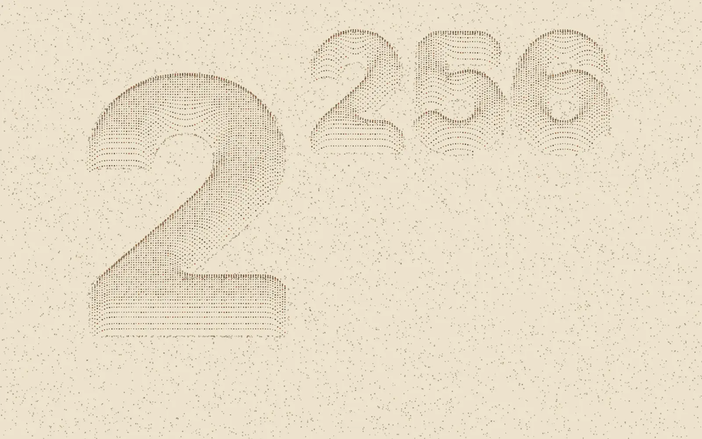
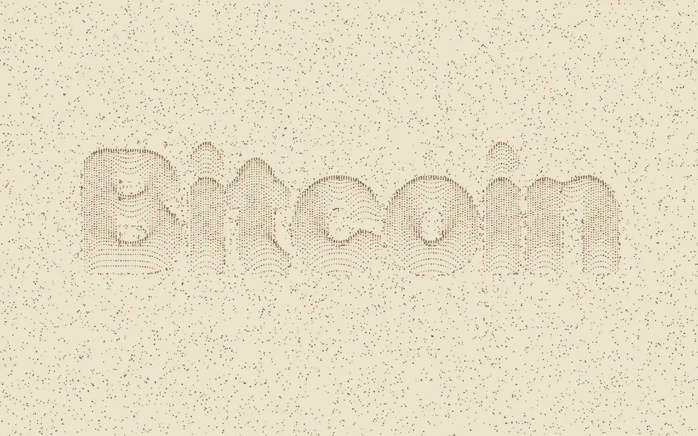

Text als Relief
aus Tintenpunkten.
Die Bitcoin-Punktwolke drückt ein Wort wie einen Stempel in eine Wolke aus Tintenpunkten auf Sepiapapier. Die Punkte weichen dem Stempel aus, das Wort erscheint als Aussparung und hebt sich dann Zeile für Zeile als Relief ab. Beliebiger Text, eigene Farben, eine einzige HTML-Datei.
Jeder aktuelle Browser · keine Installation · MIT-Lizenz

Worum es geht
Ein Spielzeug für Leinwand und Auge.
Den Anstoß gab eine interaktive Darstellung, wie groß 2^256 ist, mit genau diesem Sepia-Look. Die Punktwolke ist eine eigene Umsetzung davon, kein kopierter Code: Sie macht aus jedem Wort einen Druckstempel. Gedacht zum Anschauen, Herumspielen und als Hintergrund für Präsentationen oder Bildschirmfotos.
Live
Hier direkt ausprobieren.
Oben rechts in der Wolke liegt das Einstellungsfeld. Text ändern, Farben wählen, Regler ziehen. Mit der Maus über die Punkte fahren schiebt sie sanft beiseite. Auf dem großen Bildschirm wirkt es am besten.
Bedienung
Ein Feld, zwei Farben, zwei Regler.
Alles sitzt im Einstellungsfeld. Der kleine Pfeil daneben klappt es ein, damit nur noch die Wolke zu sehen ist. Jede Änderung spielt die Szene neu ab.
| Element | Was es tut |
|---|---|
| Text | Das Wort, das gestempelt wird. Ein ^ setzt den Rest hoch: 2^256 ergibt eine Hochzahl. |
| Hintergrund | Die Farbe des Papiers. |
| Punkte | Die Tintenfarbe. Daraus werden vier Töne abgeleitet, damit der gedruckte Eindruck bleibt. |
| Grösse | Wie groß das Wort erscheint. |
| Dichte | Wie viel Papier auf einen Punkt kommt. Kleinere Werte heißen mehr Punkte. |
| Neu abspielen | Spielt das Erscheinen noch einmal ab. Geht auch mit der Leertaste. |
| Zurücksetzen | Stellt Text, Farben und Regler auf den Anfang zurück. |
| Maus | Schiebt die Punkte, über die sie fährt, sanft beiseite. |
Wer im System „Bewegung reduzieren“ eingeschaltet hat, sieht sofort das fertige Bild ohne Animation.
Ansichten
Ein Wort, eine Zahl.
Die Voreinstellung stempelt „Bitcoin“. Mit ^ entsteht eine Hochzahl, hier 2^256.

Wie es funktioniert
Vier Schritte vom Wort zum Relief.
Kein Framework, keine Bibliothek. Alles steckt in einer Canvas-Zeichenfläche und knapp 500 Zeilen JavaScript.
Das Wort wird unsichtbar gezeichnet. Eine scharfe Maske zeigt, wo ein Buchstabe endet; mehrere Weichzeichnungen übereinander ergeben ein Druckfeld, dessen Gefälle auch tief im Strich nach außen zeigt.
Jeder Punkt läuft dieses Gefälle hinab, bis er außerhalb der Maske liegt. So entsteht das Wort als Aussparung.
Das Relief bauen Kopien benachbarter Punkte, gesucht über ein Raster. Deshalb dünnt der Hintergrund dort nicht aus, wo die Buchstaben stehen.
Federn bewegen die Punkte von Bild zu Bild. Kommen Bilder zu langsam, springt die Szene auf den Stand, den der Zeitplan verlangt, statt hinterherzuhinken.
Selbst starten
Eine Datei, kein Build.
Herunterladen und die Datei im Browser öffnen reicht. Wer lieber über einen kleinen lokalen Server geht:
git clone https://github.com/JoeMartinBTC/bitcoin-pointcloud.git
cd bitcoin-pointcloud
python3 -m http.server 8000
# dann im Browser: http://localhost:8000Mitmachen
Baut sie weiter.
Die Punktwolke ist ein Anfang. Wer eine Idee hat, soll sie bauen: Repository forken, ausprobieren, einen Pull Request schicken. Auch ein Issue mit einer guten Idee ist ein Beitrag. Es ist nur eine HTML-Datei, der Einstieg gelingt in einer Stunde.
- Das fertige Bild als PNG oder SVG speichern
- Text und Farben in der Adresse, um Bilder als Link zu teilen
- Die Animation als Video oder GIF aufnehmen
- Mehrere Zeilen und eigene Schriften
- Berührungen auf Handy und Tablet
- Farbvorlagen, etwa Bitcoin-Orange auf Schwarz
- Live-Daten als Text, zum Beispiel die aktuelle Blockhöhe
- Eine englische Oberfläche